I am a theoretical computer science/mathematician trying to learn more physics. I am interested in finding abstract mathematical models of systems/networks: particularly in the domains of quantum and classical mechanics. I understand things best in terms of pictures. Usually such pictures are formalized using monoidal categories, which are a ubiquitous structure in the field of category theory.
I recently defended my PhD in computer science at the University of Oxford. I am currently employed by the Université de Lorraine in france.
Here is a copy of my CV, updated March 2024.
I have recently thinking about string diagrams for classical mechanics and geometric quantization. I recently have become interested in diagramatic approaches quantum dynamics, and the categorical semantics for generating functions. I am also interested in diagrammatic approaches to quantum error correction, and recently quantum convolutional codes. I am also interested in diagrammatic and categorical formulations of infinite dimensional quantum mechanics and photonics.
I have fallen in love with bimodules and profunctors, and I am interested in their applications in theoretical computer science and linear logic.
I have lots of ideas so please feel free to contact me if anything here interests me. I will try to find projects to students looking for a purpose as I was.
You can also find me a the ZX-calculus seminar, and the category theory zulip channel.firstnamedotlastname(at)univ-lorraine.fr
Université de Lorraine
CNRS, Inria, LORIA
F 54000 Nancy
France
CV teleportation:
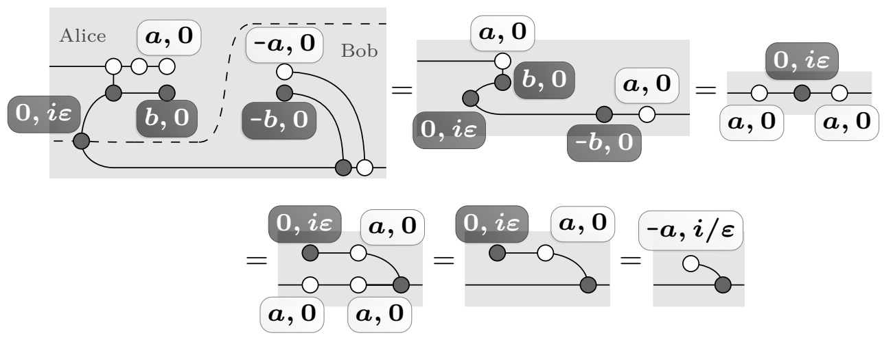
Equations for vacuum state:
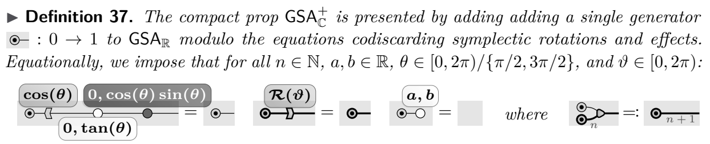
Representation of Gaussian states:
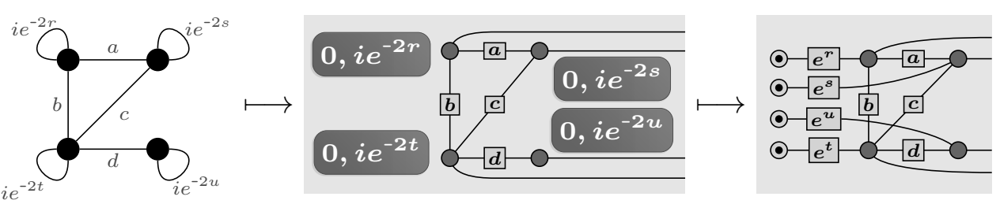
Scalable spiders:
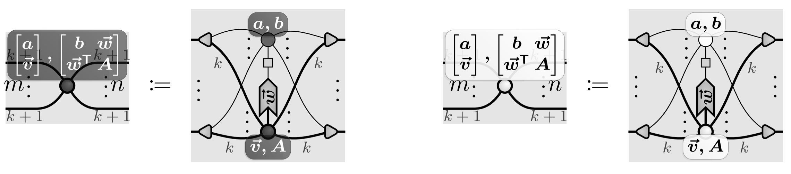
Normal form:
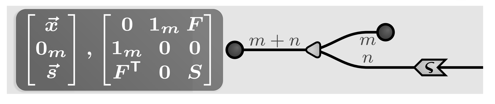
Normalization:
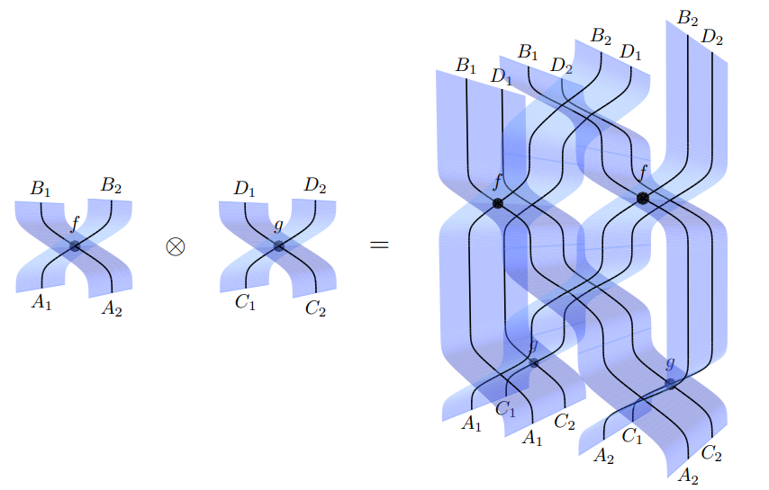
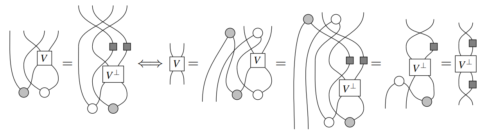
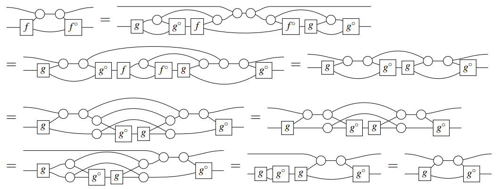
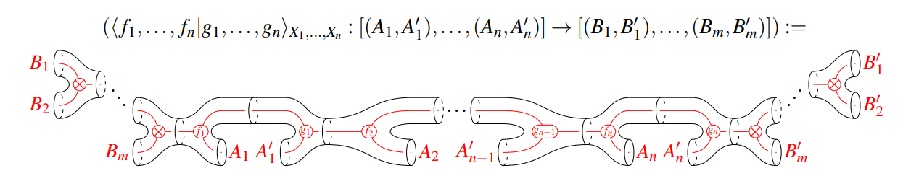
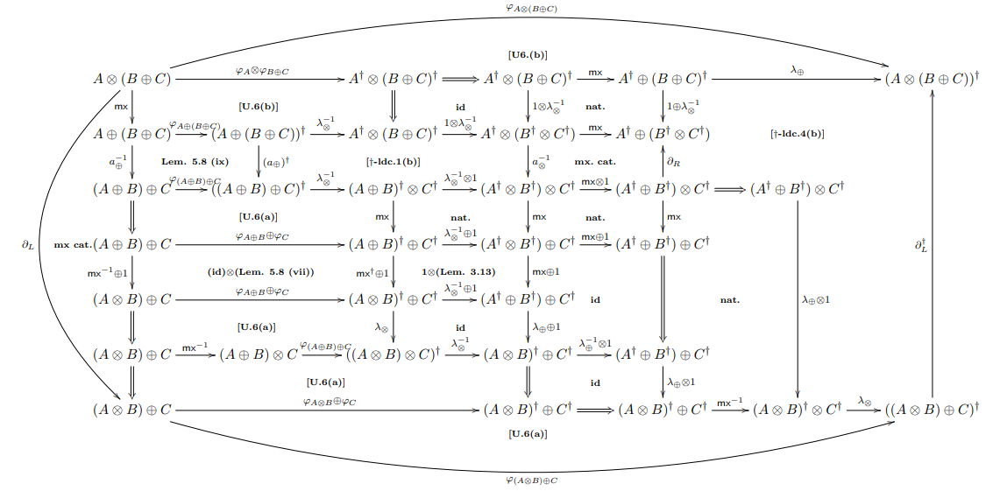
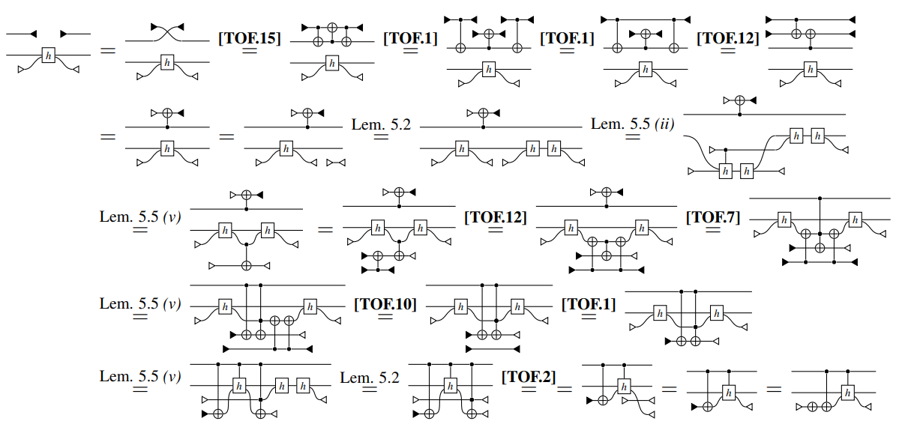
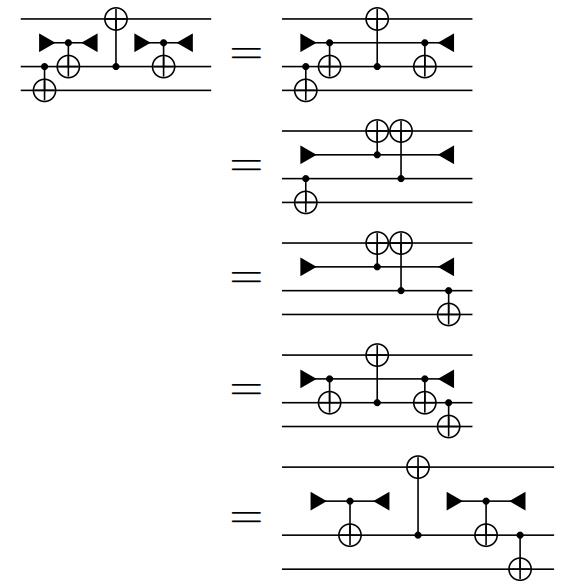